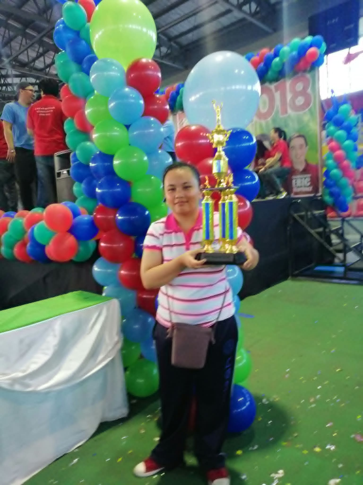

About Me
Hello everyone! My name is Jurado, Ma. Dionafe Maxime F. I am a simple, kind, and friendly person. I enjoy spending time with my family and friends. I also love listening to music, watching movies, playing games, and learning new things. I believe that life is full of opportunities and challenges that help me become a better person.

My Biography
My name is Jurado, Ma. Dionafe Maxime F. I was born and raised in Phase 5. I am a simple, kind, and friendly person who enjoys spending time with my family and friends.
During my childhood, I enjoyed playing, exploring, and discovering new things. As I grew older, I experienced different challenges that helped me become stronger, more responsible, and confident.
As a student, I continue to learn new knowledge and develop my skills. In my free time, I enjoy playing games, listening to music, watching movies, and spending time with my family.
My biggest dream is to finish my studies, have a successful future, help my family, and make them proud of everything I achieve. I believe that hard work, patience, and determination will help me reach my dreams.
Early Life
I was born and raised in Phase 5. During my childhood, I enjoyed playing, exploring, and discovering new things. My experiences helped shape who I am today.
Education
As a student, I continue to learn new knowledge and develop my skills. I believe education is important because it helps me achieve my dreams.
My Dreams
My dream is to finish my studies, have a successful future, help my family, and make them proud of everything I achieve in life.
My Life Journey
My Childhood
I started my life as a curious child who loved playing and learning new things.
My School Life
I began my educational journey and learned many important lessons from my teachers, classmates, and friends.
My Experiences
I experienced different challenges that taught me to become stronger, more responsible, and confident.
My Future Goals
I will continue studying and improving myself, working hard to reach my dreams and goals in life.
My Interests & Hobbies
🎮 Gaming
I enjoy playing games during my free time because they make me happy and entertained.
🎵 Listening to Music
Listening to music helps me relax and express my feelings.
🎬 Watching Movies
I love watching movies because they entertain me and inspire me.
👨👩👦 Family Time
I love spending time with my family because they are important in my life.